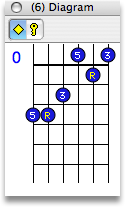

Most students begin their training by poring through books of songs by popular artists like Bob Dylan, James Taylor, or The Beatles. Such books usually contain convenient chord diagrams to help you find your feet ... or at least your fingers.
The Diagram Palette is no substitute for a good song book, but it gives you a nice isolated view of the information presented in the Guitar Palette. This palette displays the numbered note functions as they apply to the chord's root or key.
Palette Features
- Fret Number
- The diagram represents only a small portion of the neck. To get oriented you need to know which fret is at the top of the diagram. This is shown in the left margin of the diagram.
- Dots
- Each dot on the diagram represents a tone in your chord. The function of each dot is numbered relative to the Major Scale. You can choose whether to number dots as a function of the chord or a function of the Key with the Root/Key Button.
- Open Tones
- No matter where you play your chord on the neck you may have the option to play one or more open notes. If there is no note available within the bracket and an open note is available to play, the tone will be shown in red at the bottom of the diagram.
- If no note is available either in the bracketed region or on the open string then there will be an x instead of a tone number. A string with a red x should be damped.
- The Root/Key Button
- Click this button to switch the context of the diagram between root-relative and key-relative. The numbers on the dots will change according to these settings:
-
- Root Mode. Tones are numbered relative to the root of the chord (i.e., the yellow dot on the guitar neck). For example, Dm7 in the key of C has dots labeled R, b3, 5, and b7.
- Key Mode. Tones are shown as functions of the chord's key. For example, Dm7 in the key of C has dots labeled 2, 4, and 6 and R.